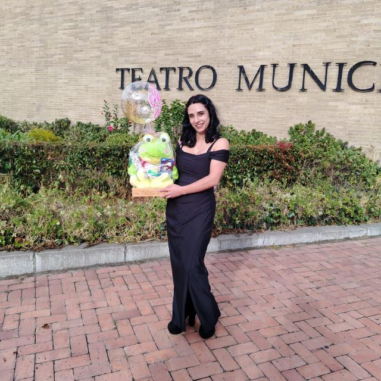

Soy katherine, una mujer profundamente enamorada de la infancia y de la hermosa misión de guiar a los niños en su crecimiento con amor, respeto y felicidad. Mi vida ha estado siempre al servicio de los más pequeños y de sus familias, con la certeza de que una niñez vivida desde el amor y la alegría es la semilla de una sociedad más equilibrada, consciente y armoniosa.
Dirijo Casita de Jesús con el alma y el corazón, creando un espacio donde cada niño es valorado en su autenticidad, donde su esencia es respetada y donde pueden florecer en un ambiente seguro, amoroso y lleno de magia. Para mí, la educación es un acto sagrado, una oportunidad de sembrar en cada niño la confianza, la curiosidad y la seguridad de que son seres maravillosos, capaces de transformar el mundo con su luz.
Acompaño a las familias con la certeza de que la crianza es un camino de amor y crecimiento mutuo. Creo en una educación holística, donde la mente, el corazón y el espíritu se nutren juntos, permitiendo que cada niño explore su ser con libertad y felicidad.
En Casita de Jesús, cultivamos amor, respeto y conciencia, porque sabemos que en cada niño habita un universo lleno de posibilidades y que, con la guía adecuada, podemos construir un mundo más hermoso para todos.
Construimos una comunidad de aprendizaje donde niños, familias y educadores crecen juntos.
La familia es nuestro aliado principal. Trabajamos de la mano con los padres.
Ofrecemos un entorno predecible y seguro que genera confianza y bienestar.
Fomentamos vínculos sanos y habilidades sociales para toda la vida.
Experiencias significativas y lúdicas que despiertan la curiosidad.
Un equipo dedicado con amor y experiencia al desarrollo integral de cada niño y niña.
